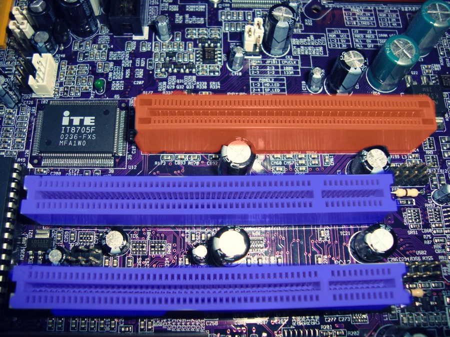

PCI·SATA·IEEE1394 비교, 색상 모델, 이미지·오디오 용량 계산, MPEG 표준 · PART 01. 전자계산기구조론
PCI·SATA·IEEE1394는 모두 주변장치 연결 규격이고, USB 세부 내용은 별도 문서(입출력 포트와 USB) 참고.
색은 RGB(가산) vs CMYK(감산)로 나뉘고, 동영상 압축 표준은 용도별로 MPEG-1/2/4/7/21이 다르다.
이 단원은 성격이 둘로 나뉜다. 인터페이스 규격(PCI·SATA·USB)과 MPEG 표준 같은 암기형, 그리고 이미지·오디오·영상의 용량 계산형이다. 그런데 배점이 큰 쪽은 계산형이고, 다행히 계산 원리는 딱 하나다.
"데이터 하나의 크기 × 데이터 개수" — 이게 전부다. 이미지는 "화소 하나의 비트 수 × 화소 개수", 오디오는 "샘플 하나의 비트 수 × 초당 샘플 수 × 채널 수 × 초", 동영상은 "한 프레임 크기 × 초당 프레임 수"다. 형태만 다를 뿐 구조가 똑같다.
계산에서 틀리는 원인도 딱 두 가지로 정해져 있다 — ①비트(bit)와 바이트(byte)를 혼동(8로 나누는 걸 잊음), ②채널 수(스테레오=2)를 빠뜨림. 아래 연습문제 4~6번에서 이 두 함정이 그대로 오답 선택지로 등장하니 직접 당해보고 익히는 게 좋다.
현실의 소리와 빛은 연속적인 아날로그 신호다. 컴퓨터는 0과 1만 다루므로, 이걸 잘게 쪼개 숫자로 바꿔야 한다. 소리는 1초를 몇 조각으로 쪼갤지(샘플링율, Hz)와 각 조각의 크기를 몇 단계로 표현할지(양자화 비트)를 정하고, 이미지는 화면을 몇 개의 점으로 쪼갤지(해상도)와 각 점의 색을 몇 단계로 표현할지(화소당 비트)를 정한다.
즉 "얼마나 잘게 쪼갰나 × 얼마나 정밀하게 표현했나" = 용량이다. 용량 공식이 왜 그렇게 생겼는지 이해하면 외울 필요가 없어진다.
| 규격 | 방식 | 용도/특징 |
|---|---|---|
| PCI | 병렬 버스 | 마더보드에 여러 주변장치를 연결하는 버스 규격, CPU와 독립 동작 |
| SATA | 직렬 | 하드디스크·광디스크 연결용, 최대 6Gbps |
| IEEE 1394 (FireWire) | 직렬 | 영상·음향 장비용, PnP·핫스와핑 지원, 최대 63개 포트, 애플은 FireWire·소니는 i.Link로 부름 |
| USB | 직렬 | 범용 인터페이스 — 세부 버전/특징은 입출력 포트와 USB 문서 참고 |
PCI(Peripheral Component Interconnect)는 메인보드 위에 길쭉한 흰색(또는 아이보리색) 슬롯으로 존재한다. CPU와 직접 통신하는 대신 칩셋(브리지)을 거쳐 데이터를 주고받기 때문에 "CPU와 독립적으로 동작한다"고 표현한다. 사운드카드·구형 랜카드처럼 대역폭이 크게 필요하지 않은 주변장치를 꽂는 데 쓰였고, 요즘 메인보드는 더 빠른 PCIe(PCI Express) 슬롯으로 대체되는 추세다.

| 모델 | 방식 | 혼합할수록 | 용도 |
|---|---|---|---|
| RGB (Red, Green, Blue) | 가산 혼합 | 흰색에 가까워짐 | 모니터, 빛 기반 디스플레이 |
| CMYK (Cyan, Magenta, Yellow, Black) | 감산 혼합 | 검은색에 가까워짐 | 잉크젯 프린터, 인쇄 |
| HSV (Hue, Saturation, Value) | - | - | 색상·채도·명도로 사람의 직관적 시각에 기초 |
예제 1. 1024×1024 화소, 256색 이미지의 용량은?
예제 2. 44.1KHz 샘플링, 16bit, 스테레오로 100초 녹음한 WAV 용량은? (1K=1000으로 계산)
| 표준 | 용도 |
|---|---|
| MPEG-1 | CD-ROM급 동영상·음향, 최대 1.5Mbps (비디오 CD) |
| MPEG-2 | 디지털TV·DVD 등 고화질·고음질 (MPEG-1 개선판) |
| MPEG-3 | 고선명 TV용으로 개발되었으나 MPEG-2에 흡수·통합 — 실제 규격 없음 |
| MPEG-4 | 저속 전송(64Kbps~) 멀티미디어 통신용 압축 (인터넷/이동통신) |
| MPEG-7 | 멀티미디어 콘텐츠 검색을 위한 메타데이터 표준 |
| MPEG-21 | 콘텐츠 제작·유통·보안 등 전체 관리 프레임워크 표준 |
비트맵/벡터 그래픽의 원리·비교는 비트맵_벡터_그래픽 문서에 정리되어 있음. 여기서는 추가 포인트만 정리:
| 구분 | RGB | CMYK |
|---|---|---|
| 혼합 방식 | 가산 혼합 | 감산 혼합 |
| 다 섞으면 | 흰색 | 검은색 |
| 기반 | 빛 | 잉크(안료) |
| 대표 장치 | 모니터 | 프린터 |
| 구분 | MPEG-2 | MPEG-4 | MPEG-7 |
|---|---|---|---|
| 목적 | 고화질 방송/DVD | 저속 멀티미디어 통신 | 콘텐츠 검색용 메타데이터 |
먼저 스스로 풀어본 뒤 "해설 보기"를 눌러 확인하세요. 3~5번 용량 계산은 단위(bit/byte)만 조심하면 전부 맞힐 수 있습니다.
색상 모델(color model)에 대한 설명으로 옳은 것은?
정답 ③ HSV = 색상(Hue)·채도(Saturation)·명도(Value)
나머지 선택지가 틀린 이유를 하나씩 보면 RGB/CMY의 성질이 정리된다.
암기 한 줄: 빛은 더할수록 밝아지고(RGB=가산=흰색), 잉크는 더할수록 어두워진다(CMY=감산=검은색).
이미지 표현을 위한 RGB 방식과 CMYK 방식에 대한 설명으로 옳은 것은?
정답 ② C는 Cyan
약자만 정확히 알면 ②·④가 바로 갈린다.
① CMYK는 가산이 아니라 감산 모델. ③ 프린터·인쇄는 RGB가 아니라 CMYK.
함정 포인트: ④번 "RGB의 B가 Black"은 매년 형태를 바꿔 나오는 단골 오답이다. K가 Black인 이유가 바로 B의 중복을 피하려는 것이라고 엮어서 외우면 절대 안 틀린다.
디지털 콘텐츠의 제작 및 유통, 보안 등 모든 과정을 관리할 수 있게 하는 기술 표준을 제시한 MPEG의 종류로 옳은 것은?
정답 ④ MPEG-21
MPEG 번호는 "무엇을 위한 표준인가"로 구분한다. 숫자가 클수록 동영상 자체보다 관리·메타데이터 쪽으로 간다고 기억하면 쉽다.
| 표준 | 용도 | 키워드 |
|---|---|---|
| MPEG-1 | 비디오 CD급 (1.5Mbps) | CD |
| MPEG-2 | 디지털 TV·DVD 고화질 | 방송·DVD |
| MPEG-4 | 저속 전송 멀티미디어 통신 | 인터넷·이동통신 |
| MPEG-7 | 콘텐츠 검색용 메타데이터 | 검색 |
| MPEG-21 | 제작·유통·보안 전체 관리 프레임워크 | 관리·유통 |
추가 함정: MPEG-3는 존재하지 않는다(MPEG-2에 흡수됨). "MPEG-3는 HDTV용"이라는 선택지는 항상 오답이다. MP3(음악 파일)와는 완전히 다른 것이니 혼동 금지.
화소(pixel)당 24비트 컬러를 사용하고 해상도가 352 × 240 화소인 TV 영상 프레임을 초당 30개 전송할 때 필요한 통신 대역폭으로 가장 가까운 것은?
정답 ④ 약 60Mbps
단위 주의: 이 문제는 대역폭(bps = bit per second)을 물었으므로 8로 나누면 안 된다. "Mbps"의 b가 소문자면 bit, "MB"의 B가 대문자면 byte — 이 구분이 정답과 오답을 가른다.
만약 실수로 8로 나누면 약 7.6MB/s가 나오는데, 선택지 단위가 Mbps이므로 애초에 맞지 않는다. 문제의 단위를 먼저 확인하는 습관을 들이자.
오디오 CD에 있는 100초 분량의 노래를 압축되지 않은 WAV 데이터로 변환하여 저장하려 한다. WAV 파일의 크기는 대략 얼마인가? (단, 샘플링율 44.1KHz, 샘플당 비트수 16bit, 스테레오. 1K = 1000으로 계산)
정답 ③ 약 17.6MB
오디오 용량 = 샘플링율 × 샘플당 비트수 × 채널 수 × 시간 ÷ 8
함정 ①: ②번 8.8MB는 스테레오(×2)를 빠뜨린 오답이다. "스테레오"라는 단어를 보면 즉시 ×2를 표시해두자.
함정 ②: ④번 70.5MB는 bit를 byte로 바꾸지 않은(÷8 누락) 계열의 오답이다.
40KHz로 샘플링하고 10비트로 양자화하여 60초의 스테레오 음악 파일을 만들었을 때, 파일의 크기는? (단, 압축은 하지 않는다)
정답 ② 약 6Mbyte
문제 5번과 완전히 같은 공식이다. 다만 여기서는 양자화 비트가 10bit라 딱 떨어지지 않으므로 bit로 끝까지 계산한 뒤 마지막에 8로 나누는 순서가 안전하다.
함정: ④번 48Mbyte가 바로 ÷8을 빼먹은 오답이다. 계산 결과 48,000,000이라는 숫자가 나왔을 때 선택지에 "48"이 보이면 반가운 마음에 찍기 쉬운데, 그 48은 bit 단위이고 문제는 byte를 물었다.
체크리스트: 오디오 용량 문제를 풀 때마다 ①채널 수 곱했나 ②bit→byte 나눴나 두 가지만 확인하면 된다.